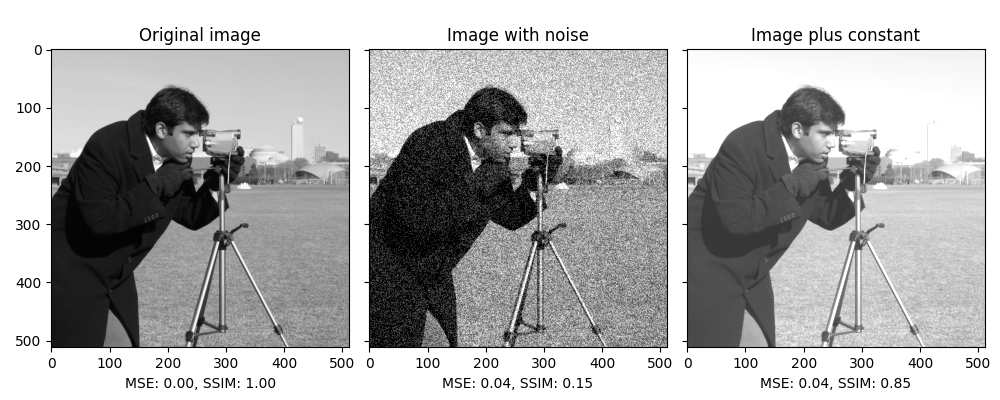

Source
SourceNote
Click here to download the full example code or to run this example in your browser via Binder
Structural similarity index¶
When comparing images, the mean squared error (MSE)–while simple to implement–is not highly indicative of perceived similarity. Structural similarity aims to address this shortcoming by taking texture into account [1], [2].
The example shows two modifications of the input image, each with the same MSE, but with very different mean structural similarity indices.
import numpy as np
import matplotlib.pyplot as plt
from skimage import data, img_as_float
from skimage.metrics import structural_similarity as ssim
from skimage.metrics import mean_squared_error
img = img_as_float(data.camera())
rows, cols = img.shape
noise = np.ones_like(img) * 0.2 * (img.max() - img.min())
rng = np.random.default_rng()
noise[rng.random(size=noise.shape) > 0.5] *= -1
img_noise = img + noise
img_const = img + abs(noise)
fig, axes = plt.subplots(nrows=1, ncols=3, figsize=(10, 4),
sharex=True, sharey=True)
ax = axes.ravel()
mse_none = mean_squared_error(img, img)
ssim_none = ssim(img, img, data_range=img.max() - img.min())
mse_noise = mean_squared_error(img, img_noise)
ssim_noise = ssim(img, img_noise,
data_range=img_noise.max() - img_noise.min())
mse_const = mean_squared_error(img, img_const)
ssim_const = ssim(img, img_const,
data_range=img_const.max() - img_const.min())
ax[0].imshow(img, cmap=plt.cm.gray, vmin=0, vmax=1)
ax[0].set_xlabel(f'MSE: {mse_none:.2f}, SSIM: {ssim_none:.2f}')
ax[0].set_title('Original image')
ax[1].imshow(img_noise, cmap=plt.cm.gray, vmin=0, vmax=1)
ax[1].set_xlabel(f'MSE: {mse_noise:.2f}, SSIM: {ssim_noise:.2f}')
ax[1].set_title('Image with noise')
ax[2].imshow(img_const, cmap=plt.cm.gray, vmin=0, vmax=1)
ax[2].set_xlabel(f'MSE: {mse_const:.2f}, SSIM: {ssim_const:.2f}')
ax[2].set_title('Image plus constant')
plt.tight_layout()
plt.show()
Total running time of the script: ( 0 minutes 0.781 seconds)